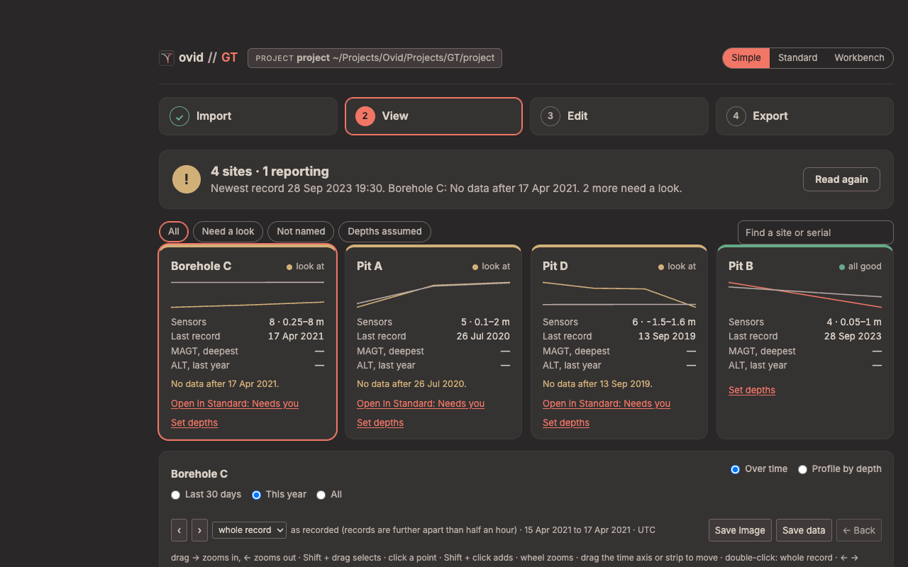
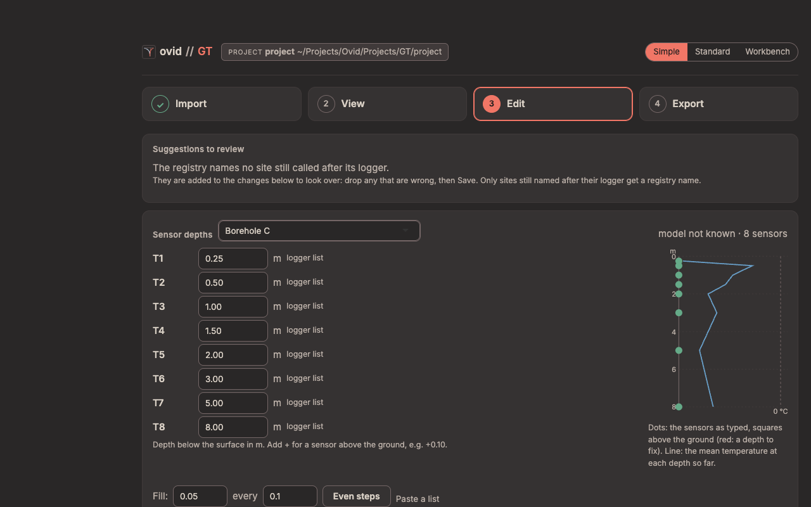
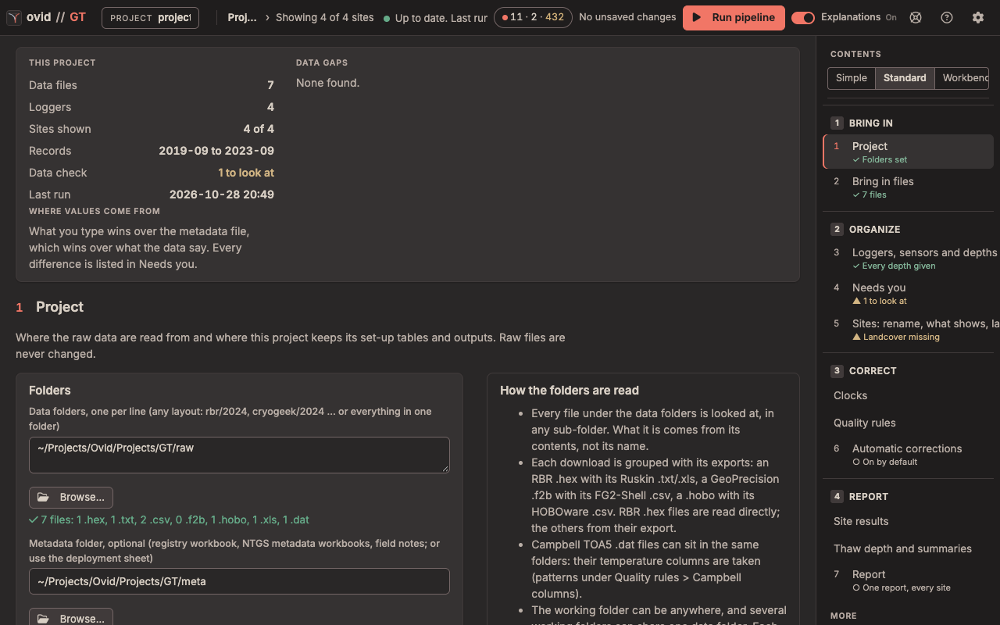

ovid GT quick start
Ground temperature strings (RBR, GeoPrecision, HOBO, EM50 and Campbell loggers), from raw downloads to daily temperatures at each depth, MAGT, thaw depth and active-layer thickness for each site.
Before you start
- Raw files. Put the logger downloads in a data folder, in any layout (
rbr/2024,geoprecision/2024… or all in one folder). Keep each logger's own file and its export together: an RBR.hexwith its Ruskin.txt, a GeoPrecision.f2bwith its FG2-Shell.csv, a.hobowith its HOBOware.csv. RBR.hexfiles are read directly; the others are read from their export. Raw files are never changed. - Optional. A registry workbook (a sheet with Name, Type and SN columns), borehole metadata workbooks and field notes in a metadata folder, or a deployment sheet in the project's
config/folder with each string's site and sensor depths.
Open the app with Open GT (Mac).command (Windows: Ovid_GT.bat). The figures use the app's test project (four constructed sites, Pit A, Pit B, Pit D and Borehole C), not field data.
The Simple view
For someone new to the data, or a field check: four steps in one column, and nothing that changes a data value. A new install opens in Simple; the switch at the top (Simple, Standard, Workbench) moves between the three views of the same project, as does ?ui=simple, ?ui=standard or ?ui=workbench in the address.

- Import: the data folders and the project folder, then Read the data. The first read asks the time zone of files that state none. What was read lists the files, strings, sensors and sites, and a checklist: downloads read, clocks fixed, every string has a site, site names, sensor depths and places.
- View: one tile per site (sensors and their depth range, last record, MAGT at the deepest sensor, ALT of the last year; amber or red when it needs a look, with a link to the Standard page that fixes it). The buttons above the tiles show all sites, those that need a look, those not named, or those with assumed depths. The plot shows a site Over time or as a Profile by depth.
- Edit: sensor depths, site names, land cover and grouping (below).
- Export: the field check report (one page, HTML) and the daily temperatures (one CSV per site, with a README) or the plots, each as a .zip.
Sensor depths in Simple

- Pick the site under Sensor depths. Each sensor (T1, T2 …) has its depth in metres below the surface, with where it came from.
- Type a depth, or add + for a sensor above the ground, e.g. +0.10. Fill with Even steps, Paste a list, copy from another site, or use the model's template where there is one.
- Add to changes. The list of changes below waits until Save (with Undo and a change log); the next Read the data uses the new depths.
Depths change MAGT and ALT. The plot beside the list shows the sensors as typed (a square above the ground, red for a depth to fix) and the mean temperature at each depth so far. Below the depths, rename a site, give it a place or a land cover, or drag a string onto another site. Data values, quality rules and corrections are not changed here.
The Standard view

The contents on the right list the steps in working order: 1 Bring in (Project, Bring in files), 2 Organize (Loggers, sensors and depths; Needs you; Sites: rename, what shows, landcover), 3 Correct (Clocks, Quality rules, Automatic corrections) and 4 Report (Site results, Thaw depth and summaries, Report). More holds Overview, Plot and explore, Compare sites, Soil moisture and EC, Site details, Sensor health, Audit trail, Configuration, Set-up check and Settings. Each step shows its state under its name.
The top bar has the project, the run state, the corrections the last run applied, Run pipeline, the Explanations switch and the view switch. This project at the top of a page counts the files, loggers, sites and records, and lists the data gaps.
The first run
- 1 Project: set the data folders, the metadata folder (optional) and the project folder; Browse… picks a folder. The line under each says what was found.
- Run the Set-up check (More) and fix anything in red.
- Press Run pipeline. Files that state no time zone ask for one; the answer is kept for later runs. The first run fills
sites.csvandsensors.csvfrom the registry or the deployment sheet. - Loggers, sensors and depths: every sensor needs a site and a depth. Depths marked default or template are assumptions: replace them with measured depths.
- Bring in files lists bundles that need export (a
.f2bor.hobowith no readable export): export them with FG2-Shell or HOBOware Pro's Bulk Export, which write a CSV beside each file, then run again. - Needs you: decide each finding (keep, remove or note), or follow its link to the page that fixes it.
Only loggers whose files or set-up changed are read again; the rest are reused from the last run.
What the results mean
- Daily means use complete days only (80 % of the expected records unless set in Settings).
- MAGT is the mean of the daily means over a complete year (90 % of its days), at each depth, for the calendar year and the water year (October to September) (van Everdingen 1998; Romanovsky et al. 2010).
- Thaw depth each day is the 0 °C crossing, interpolated linearly between the deepest sensor above 0 °C and the first at or below it; ALT is the year's deepest thaw depth, given only where a sensor stays at or below 0 °C for two years running (Brown et al. 2000; Nelson and Hinkel 2003; van Everdingen 1998).
- Zero curtain is a run of at least 3 days within 0.2 °C of 0 °C (Outcalt et al. 1990).
The GT reference guide gives every formula, its sources and the defaults with no published source.
Report
Report (4 Report) exports the data and reports (HTML, PDF or both) for the sites picked; every run also writes output/report.html. Site results and Thaw depth and summaries show each site's annual statistics, trumpet curves, thaw depth and ALT.
ovid GT. For what GT does to the data and why, see the GT reference guide.